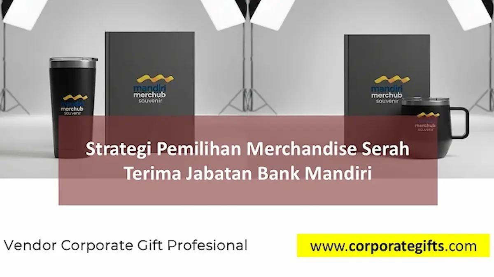

Corporate Gifts ID - Serah terima jabatan (sertijab) di lingkungan Bank Mandiri bukan sekadar prosesi seremonial formal, melainkan simbol kesinambungan kepemimpinan, integritas profesional, serta momentum apresiasi tulus atas rekam jejak dedikasi para pejabat eksekutif. Dalam perhelatan sepenting ini, merchandise serah terima jabatan Bank Mandiri memegang peranan krusial sebagai tanda kehormatan bagi pejabat yang berpindah tugas maupun yang baru dilantik, sekaligus menjadi media representasi visual yang mengukuhkan reputasi Bank Mandiri sebagai lembaga keuangan terdepan, modern, dan tepercaya di Indonesia.
Poin Kunci Kurasi Merchandise Sertijab Perbankan:
- Representasi Budaya Korporat: Produk wajib mencerminkan pilar profesionalisme, tata kelola yang baik (GCG), serta semangat inovasi perbankan nasional.
- Konsistensi Palet Warna: Pemanfaatan warna biru tua korporat (Mandiri Blue) dipadukan aksen emas atau perak satin untuk menegaskan kewibawaan.
- Sentuhan Personalisasi Eksekutif: Ukiran laser nama pejabat beserta tanggal masa jabatan pada plakat kristal atau pulpen metal menghadirkan ikatan emosional mendalam.
- Adopsi Prinsip ESG: Pemilihan material ramah lingkungan seperti tumbler berinsulasi bambu dan kertas daur ulang bersertifikasi memperkuat komitmen hijau perbankan.
Makna Strategis Merchandise dalam Momen Serah Terima Jabatan
Momen pergantian pimpinan cabang, regional, maupun divisi kantor pusat membawa dinamika baru dalam organisasi. Cinderamata yang diserahkan menjadi simbol estafet tanggung jawab yang elegan. Bagi pejabat yang berpindah tugas, hadiah korporat adalah memori abadi yang mengabadikan pencapaian kerja sama tim. Sedangkan bagi pejabat baru, bingkisan tersebut menjadi ucapan selamat datang yang mengobarkan semangat kepemimpinan.
Pengadaan merchandise ini menuntut ketelitian tinggi agar tidak terjadi kesalahan konsep yang dapat mereduksi martabat acara institusi perbankan.
Menyelaraskan Pilihan Suvenir dengan Identitas Bank Mandiri
Sebagai salah satu bank BUMN terbesar di tanah air, identitas visual Bank Mandiri sarat akan ketegasan dan kemapanan. Oleh sebab itu, kurasi merchandise perusahaan harus berpijak pada standar mutu tinggi.
Paket bingkisan seperti pena eksekutif berbobot mantap, buku agenda kulit dengan blind deboss logo yang rapi, serta wireless powerbank berkapasitas besar dengan balutan warna biru tua korporat mampu memancarkan karakter modern tanpa meninggalkan etika formalitas perbankan.
Tabel Rekomendasi Merchandise Sertijab Berdasarkan Kategori
Berikut panduan segmentasi produk cinderamata serah terima jabatan yang disesuaikan dengan profil penerima dan fungsi acara:
| Kategori Cinderamata | Item Produk Unggulan | Karakteristik & Finishing | Nilai Filosofis |
|---|---|---|---|
| Executive Leadership Set | Rollerball pen logam, leather notebook, name card case kulit | Finishing doff matte, grafir laser nama pejabat, boks beludru mewah | Simbol ketelitian, otoritas kebijakan, dan integritas kepemimpinan |
| Honorary Crystal Plaque | Plakat kristal optik 3D laser engraving, plakat kayu perak | Potongan prisma presisi, cetakan grafir internal detail foto dan masa bakti | Tanda kehormatan abadi dan apresiasi atas dedikasi tanpa cela |
| Modern Smart Tech Set | Fast wireless charging powerbank, smart tumbler suhu digital, flashdisk OTG metal | Warna biru korporat Mandiri, logo print UV timbul tahan gores | Mencerminkan akselerasi transformasi digital dan produktivitas tinggi |
| Green Sustainability Set | Tumbler bambu stainless SUS304, agenda kertas daur ulang, pena gandum | Tekstur serat kayu alami, grafir laser tanpa bahan kimia cat | Wujud nyata kepedulian lingkungan dan penerapan tata kelola ESG |

Plakat kristal optik dan gift set berukir nama personal menghadirkan rasa bangga mendalam bagi para pejabat.
Menyeimbangkan Unsur Fungsional dan Nilai Simbolis
Suvenir yang ideal untuk sertijab menggabungkan dua elemen esensial: kegunaan praktis sehari-hari dan bobot simbolisme penghargaan.
Perlengkapan seperti tumbler suhu berinsulasi vakum atau powerbank nirkabel akan menemani rutinitas harian pejabat, menjaga kehadiran brand Bank Mandiri secara berkelanjutan. Di sisi lain, plakat kristal atau piagam logam berukir menghiasi ruang kerja pimpinan sebagai monumen pencapaian karier yang membanggakan.
Tren Suvenir Ramah Lingkungan (ESG) di Sektor Perbankan
Sejalan dengan komitmen perbankan nasional terhadap keberlanjutan dan pembiayaan hijau, tren cinderamata korporat kini kian berorientasi pada produk ramah lingkungan.
Pilihan tumbler beraksen bambu alami, notebook berserat gandum, serta kotak kemasan dari kertas kraft daur ulang premium menjadi bukti konkret bahwa Bank Mandiri tidak hanya mengedepankan performa finansial, tetapi juga aktif menjadi pelopor pelestarian lingkungan bumi.
Sentuhan Personalisasi Nama Pejabat dan Kemasan Eksklusif
Nilai sebuah cinderamata bertambah berlipat ganda ketika memiliki unsur personal. Menyematkan nama lengkap dan gelar pejabat, periode masa bakti, serta kutipan apresiasi singkat mengubah barang pabrikan menjadi pusaka kenang-kenangan yang berharga.
Penyajian akhir pun tidak boleh luput dari perhatian: kemasan hardbox berlapis beludru atau satin biru dengan foil logo emas timbul, pita pengikat resmi, serta kartu ucapan elegan menyempurnakan seremoni penyerahan di hadapan dewan direksi dan tamu kehormatan.
Pertanyaan Seputar Merchandise Sertijab Bank Mandiri (FAQ)
Kesimpulan dan Solusi Pengadaan Bersama Vendor Profesional
Merchandise serah terima jabatan Bank Mandiri adalah jembatan komunikasi korporat yang memadukan rasa terima kasih, wibawa kepemimpinan, dan proyeksi visi masa depan. Pemilihan yang matang tidak hanya memuliakan para pejabat yang berdedikasi, tetapi juga memperkuat ikatan kebersamaan seluruh keluarga besar institusi perbankan.
Percayakan pengadaan suvenir sertijab Anda kepada CorporateGifts.ID. Kami siap membantu mulai dari konsultasi kurasi produk berstandar GCG, penyelarasan warna brand guideline, pembuatan sampel digital mockup cuma-cuma, hingga pengemasan eksklusif yang siap diserahterimakan.

Ditulis oleh: Sholikhatun Nikmah
Creative Product Designer & Bespoke Packaging ConsultantDesainer produk dan konsultan pengemasan eksklusif di CorporateGifts.ID. Berpengalaman lebih dari 8 tahun dalam menangani suvenir acara perbankan nasional, gift set direksi BUMN, plakat kehormatan kristal, dan standardisasi suvenir resmi instansi.
Lihat Profil Lengkap & Panduan Lainnya